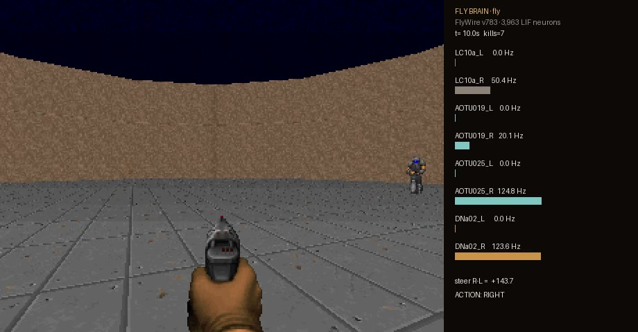
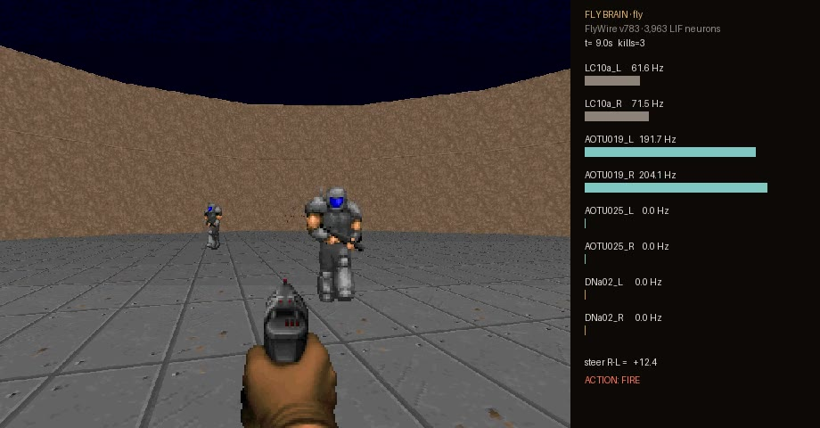

§1 · Summary
结论速览
- 回路抽取是可信的。单侧刺激 LC10a 时，子图里 DNa02 的转向方向与 13.9 万神经元全脑模型一致；左侧放电率几乎相同（子图 104 Hz vs 全脑 106 Hz），右侧子图偏弱（4 Hz vs 59 Hz）。
- 不训练，真实接线就能瞄准开火。10 局 Doom“守中心”平均击杀 10.2，达到“直接读敌人方位”上限（11.5）的 89%，两者差异不显著（p = 0.35）。
- 接线结构是关键。打乱接线后击杀降到 0.7（用它自己的阈值）或 0（沿用真实阈值），与随机按键（0.9）同一水平。
- 敲除有剂量效应。只敲除外周通路 AOTU025，击杀减半到 5.5（p = 0.048）；两个 AOTU 一起敲除降为 0，但这一项部分由读出规则决定，见 §8。
- 它不是“会学习的果蝇大脑”。视觉编码、开火规则与阈值都是工程设定，只有中间 354,879 条连接来自真实数据。
§2 · Landscape
其他有意思的果蝇项目：它们实际做了什么
9 月 MaleCNS 发布后，社区在两周内做出了几十个项目（汇总于 awesome-fly）。挑出最值得看的，并按“接线图真正承担了多少工作”标注。
| 项目 | 做了什么 | 接线图的角色 | 能直接玩 |
|---|---|---|---|
| Swat | 拍苍蝇街机游戏，可视化逃逸回路 | 6,000 个 MaleCNS 神经元影响闪避，叠加人工设计的游戏机制 | 浏览器 |
| Help the Fly Escape | 摆放家具，看果蝇在 3D 房间里找出路 | Rust/WASM 跑选定的 MaleCNS 子回路；方程、感觉输入与运动规则为模型 | 浏览器 |
| Fly Chess Lab | 果蝇下国际象棋 | FlyWire LIF + 断连对照；落子读出是工程化、未训练的 | 浏览器 |
| Fly Dino | Chrome 断网小恐龙 | 固定的 80 神经元回路 + 用交叉熵方法训练的 243 参数读出 | 浏览器 |
| DOOMFLY | 刷屏的“果蝇玩 Doom” | 完整 MaleCNS；3,335 个 R1–R6 + 811 个 R8 光感受器输入；DNp20/DNpe017 读出由作者指定；多巴胺调节 KC→MBON11 可塑性。作者自述 v6 未通过视觉、条件化与生存验证 | 需数 GB 内存 |
| FlyDoom | 研究框架：真实接线 vs 随机图 vs 度保持重连 vs MLP/GRU | 子图 1,000–10,000 神经元 + PPO 或三因子学习；README 未报告对比结果 | 需自己跑 |
| Fly64 · Minecraft 模组 | 马里奥 64 控制器；Minecraft 里每只苍蝇跑一个过滤后的 MaleCNS 图 | 模型化的感觉输入与运动读出，偏娱乐演示 | 需游戏本体 |
| FLYT3 · fly-craftax | 井字棋；Craftax 生存游戏 | 冻结的全图 LIF + 强化学习训练的下行神经元读出，带基线对比 | 需训练 |
| Closed-Loop Fly | 浏览器里：复眼模型 → 视叶 → 下行神经元 → 飞行身体 | 完整感觉运动闭环，映射为近似 | 需本地 |
| Fly.exe | 16.5 万神经元 MaleCNS 闭环驱动 12 只 NeuroMechFly | 逐条标注验证等级：“步态是工程实现”“无社会行为” | 需 NVIDIA |
共同点：几乎所有“果蝇玩游戏”都需要一个人为指定或另外训练的读出层；只有少数项目发布了打乱接线的对照。本实验把对照放在第一位。另注：9 月 15 日实测 flybrain.app 已换成企业品牌版，喂食与吹风工具不再可用。
§3 · Design
实验设计：借用果蝇追踪配偶的那条回路来瞄准
雄果蝇求偶时会一路追着雌蝇转向，这靠的是一条已被研究清楚的通路（Neuron 2026）：LC10a 视觉投射神经元检测小的移动物体，经前视结节的 AOTU019（GABA，投射对侧，负责中央 0–40° 视野）和 AOTU025（乙酰胆碱，投射同侧，负责外周 40–90°）汇聚到转向下行神经元 DNa02，左右 DNa02 的放电差决定约 200 ms 后的转向。瞄准本质上就是“把目标转到正前方”，所以直接借用。
目标方位角 → 对应眼的 LC10a 泊松刺激（≤150 Hz）。±6° 内两侧同时刺激（双眼重叠区）。
FlyWire v783 子图的全部连接与正负号；方程与参数照搬 Shiu et al. 2024，0.1 ms 步长。
转向 = (DNa02 右−左) + (AOTU019 右−左)；左右 AOTU019 都超过阈值 → 开火。
Doom：左转/右转/开火按键，每 tic（1/35 s）跑 286 步神经仿真。网页：转速与转向信号成正比。
子图怎么抽
在突触数 ≥ 5 的连接上，从 LC10a 往下游走 ≤ 2 步、从 5 类转向 DN（DNa01/02/03/04/11）往上游走 ≤ 2 步，取交集加上起点终点，再保留子图内部所有强度的连接。
回路里的关键突触（真实数据）
数值 = 突触数 × 正负号（负数为抑制）。左右并不完全对称：AOTU019 左 → DNa02 右的抑制（−216）约为右侧对应连接（−121）的 1.8 倍。
LC10a 的“视野位置”从哪来
连接组里没有每个 LC10a 的感受野坐标。我用一个代理：某个 LC10a 连到 AOTU019 的突触越多，就认为它偏中央视野；连到 AOTU025 越多，就偏外周。这是本实验最重要的工程假设之一，§5 的中央/外周分工有一部分由它构造而来。
§4 · Validation
子图验证：和 13.9 万神经元的全脑模型对得上吗
条件：以 100 Hz 刺激左眼或右眼全部 LC10a，每个条件 5 次 × 1 秒。全脑模型用 Brian2 跑 Shiu 模型 + v783 数据，每个条件约 128 秒；子图（numpy）约 1.4 秒。
| 刺激 | 模型 | DNa02 左 | DNa02 右 | 右−左 | AOTU019 左/右 | AOTU025 左/右 | 方向 |
|---|
读法：真实接线下，刺激哪只眼，同侧 DNa02 就放电，这是“同侧转向”，与论文一致。子图在左侧几乎复现全脑数值，右侧方向正确但偏弱，说明深度 2 的截断丢掉了一部分右侧的输入。打乱接线后，右眼刺激反而让左侧 DNa02 放电，方向错了。
§5 · Calibration
转向调谐：目标在哪个方向，回路怎么响应
把单个目标依次放在 −90° 到 +90° 的 17 个方位，每个方位先预热 10 tic、再平均 20 tic 的放电率。读出阈值由这条曲线一次性确定，之后所有实验固定不变。
转向信号 vs 目标方位
正值 = 右转。阴影带 = 真实回路的转向阈值（±），带内不转。
真实回路：AOTU019 与 AOTU025 的方位偏好
AOTU019 在中央 ±15–30° 最强，AOTU025 在外周 60–90° 最强，与论文的中央/外周分工一致（部分由 §3 的位置代理构造）。
中央 ±30° 内 DNa02 几乎不放电：子图里 DNa02 没有基线活动，AOTU019 的对侧抑制无处施加。这就是读出里加入“AOTU019 左右差”的原因（§8 第 3 条）。
§6 · Doom
Doom 实验：7 个条件 × 10 局
场景：ViZDoom 自带的 defend_the_center，玩家站在圆形场地中央只能左转、右转、开火，敌人从四周走来，弹药 26 发。每个条件用同样的 10 个随机种子（配对设计）。
| 条件 | 含义 |
|---|---|
| fly | 真实连接组 |
| oracle | 不经大脑，直接按敌人方位转向开火（上限参照） |
| lesion025 | 敲除左右 AOTU025（外周通路） |
| lesion | 敲除左右 AOTU019 + AOTU025 |
| scrambled_cal | 度保持打乱接线，用它自己的标定阈值（更公平） |
| scrambled | 度保持打乱接线，沿用真实回路阈值 |
| random | 随机按键（下限参照） |
每局击杀数
条形 = 10 局平均，横线 = 自助法 95% 置信区间，点 = 每一局。
| 条件 | 击杀 均值±标准差 | 95% CI | 存活 (s) | 命中率 | p（vs fly） | 转错方向 |
|---|
p 值为同种子配对的符号翻转置换检验（20,000 次，双侧）。“转错方向”取自第 1 局逐帧记录：目标偏离 ±6° 以外时，发出反向转向指令的帧占比。真实回路全程 0%。
一局里的瞄准过程（真实回路，第 1 局前 12 秒）
上：最近敌人的方位（果蝇视野角），灰带为 ±6° 双眼重叠区。下：关键神经元放电率；红色竖线 = 开火。


两次前台实时演示
| 种子 | 真实连接组 击杀 / 存活 | 打乱接线 击杀 / 存活 |
|---|
§7 · Web game
网页：果蝇神射手
同一个回路、同一套方程在浏览器的 Web Worker 里实时运行（1× 实时，约 1,500–2,000 次放电/秒），3D 场景里果蝇站在台座上，青色目标绕场飞行。
- 神经回路窗：3,963 个神经元按“眼 → 第 1 层 → 第 2 层 → 下行 DN”分层排列，左脑在左、右脑在右，每次放电都会闪亮；AOTU019/025 与 DN 画成带放电率的大节点，关键连接的线宽随源头活动变化。切到“大脑 3D 位置”可看这些神经元在真实大脑里的胞体坐标闪烁。
- 关键神经元窗：8 个关键群的实时放电率、转向信号指针与阈值刻度、最近 4 秒的放电轨迹与开火标记。
- 实验台：一键切换真实/打乱接线，勾选敲除 AOTU019、AOTU025、DNa02 左右，调目标数量和速度。
- 战绩：按条件分别记录命中、射击、命中率、击杀/分，方便现场对比。
- 全部窗口可拖动、最小化、关闭、缩放，顶栏可重新打开与复位；中英双语。
与 Doom 的差别：网页用比例转向（转速 ∝ 转向信号），论文中 DNa02 左右差对应的就是转向角速度；Doom 只能离散按键。本地运行时实测 12 秒内曾出现“目标停在视野边缘、信号低于阈值而卡住”，改为比例转向后解决。
# 本地运行（fruitfly-lab 目录下）
node fly-aim/tools/serve.mjs 8765
open http://localhost:8765§8 · Limits
局限与诚实声明
- 视觉是捷径。敌人方位来自 ViZDoom 的物体标签，不是从像素里算出来的；复眼光学与视叶处理全部跳过。
- 视野位置代理有循环性。LC10a 的中央/外周偏好由它连到 AOTU019 还是 AOTU025 定义，所以 AOTU019/025 的方位调谐不能当作独立证据；独立的证据是同侧转向方向与打乱对照。
- 读出读了中间神经元。子图里 DNa02 没有基线放电，AOTU019 的抑制性转向无法在 DN 上体现，因此直接读 AOTU019 左右差和双侧活跃度。这让“敲除 AOTU019+025 → 0 击杀”部分成为规则的必然结果；更有信息量的是只敲除 AOTU025（5.5，p = 0.048，样本仅 10 局，属边缘显著）。
- 阈值偏向真实回路。scrambled 沿用真实回路阈值对它不利，所以另设 scrambled_cal 用自己的标定；两者都接近随机水平。
- 子图截断。只保留深度 2、突触 ≥ 5 的路径，右侧 DNa02 幅度明显低于全脑模型；大脑其余部分、身体运动系统与飞行都没有模拟。
- 神经元极简。LIF 模型，无树突、无可塑性、无神经调质；雌性 FlyWire 数据，不是 9 月发布的雄性 MaleCNS。
- 统计有限。每个条件 10 局；fly 与 oracle 的差异不显著（p = 0.35），不能说“接近上限”以外的更强结论。瞄准质量指标只来自第 1 局的逐帧记录。
- 任务很简单。
defend_the_center只有转向与开火，26 发弹药限制了击杀上限。
§9 · Reproduce
复现步骤
# 0. 环境（均已在本机建好） uv venv --python 3.12 doom-play/.venv uv pip install --python doom-play/.venv/bin/python vizdoom numpy numba imageio imageio-ffmpeg pillow curl -sL -o data/flywire_annotations_783.tsv https://raw.githubusercontent.com/flyconnectome/flywire_annotations/main/supplemental_files/Supplemental_file1_neuron_annotations.tsv # 1. 抽回路 → circuit/meta.json + edges.bin Drosophila_brain_model/.venv/bin/python flycircuit/extract.py # 2. 子图 vs 全脑 vs 打乱 验证（全脑部分约 4 分钟） Drosophila_brain_model/.venv/bin/python flycircuit/validate.py # 3. 标定 + 7 个条件各 10 局 + 统计 doom-play/.venv/bin/python doom/fly_doom.py --calibrate for p in fly scrambled scrambled_cal lesion lesion025 random oracle; do doom-play/.venv/bin/python doom/fly_doom.py --policy $p --episodes 10 --record; done doom-play/.venv/bin/python doom/analyze.py # 4. 前台实时演示 + 录像 open run_doom_demo.command
§10 · Files
文件与来源
| 路径（fruitfly-lab/） | 内容 |
|---|---|
flycircuit/extract.py · lif.py · validate.py | 回路抽取、LIF 仿真（numba/numpy）、全脑对照验证 |
circuit/ | 子图数据：meta.json（神经元、分组、坐标）+ edges.bin（CSR） |
doom/fly_doom.py · live_demo.py · analyze.py | 批量实验、前台演示与录像、统计 |
doom/results/ | 各条件 JSON、逐帧轨迹、第 1 局录像、标定曲线、analysis.json |
videos/ | 前台实时录像（带时间戳） |
fly-aim/ | 网页“果蝇神射手”（静态站点，可部署） |
run_doom_demo.command | 一键前台演示 + 录像 |